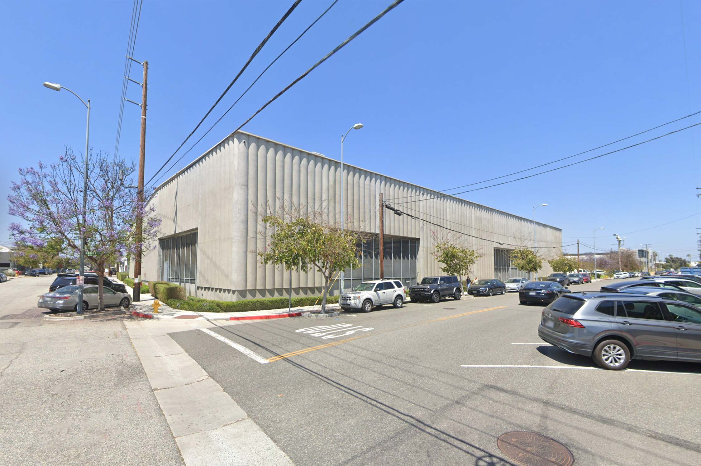

Dakota Higgins
b. 1995 Las Vegas, NV
Dakota Higgins’ practice is about elusivity — about the ways that subjects evade our capacity to name, depict, articulate or experience them. Secretly, it’s about the fact that he never met his father. Something intelligent about Freud, followed by a well-reasoned and -articulated line about how the Oedipus complex is a metaphor for the Artist’s search for meaning (in art and elsewhere). L’objet petit a, eureka. Higgins grew up in Las Vegas, which provides significant context to the fact that his work is often shiny and has something to do with money.
Exhibitions

Welcome! And Other Fallacies
Dakota Higgins, Omar Gomez & Gabriela Saucedo
Feb 2023